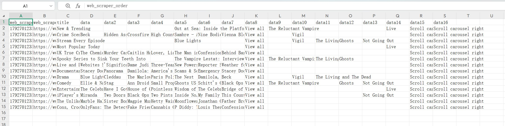

This week, I learned how to use a Web plugin to scrape webpage code, and after class I tried to continue scraping the code from the BBC homepage. I'm still confused about the scraping process. I couldn't scrape all the content on the page very well. I think this is because BBC as a video website, has many parts that keep scrolling, like its top section. So I don't know how to scrape the top section and headlines of the BBC homepage while also scraping all the content below. When I choose to scrape the headlines first, I can no longer select the content—the webpage prompts me that the selected content is not within the parent element. I could only choose the simplest auto-scraped data as my assignment.
I chose the Excel screenshot of my scraping web page code as an attachment.
